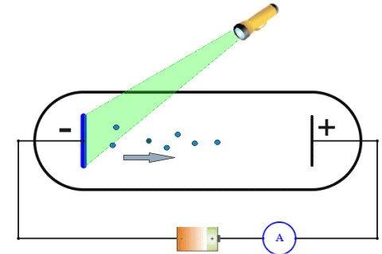
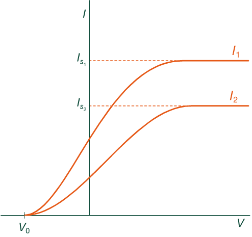
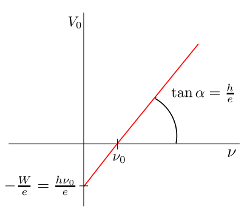
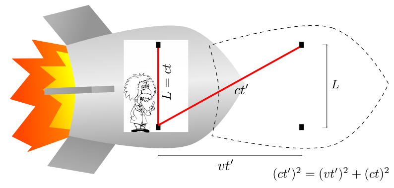
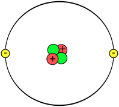

Una nova visió de l’univers
Física quàntica
La crisi de la física clàssica i el naixement d’una nova física
Cap a la segona meitat del segle XIX els físics pensaven que la física estava terminada, que ja no quedava res important per descobrir a banda d’algun que altre detall. La física havia arribat a una gran precisió en les seves prediccions, les lleis de Newton semblaven imbatibles. Per exemple, l’any 1846 un gran descobriment va refermar la mecànica de Newton després que es trobés una petita desviació de l’òrbita del planeta Urà respecte de la que predeia la llei de gravitació de Newton, aleshores es va suposar que aquest desviament era degut a un nou planeta i, fent els càlculs, es va trobar aquest nou planeta, al que ara coneixem com Neptú, en el lloc on predeia la teoria. Uns anys després tot l’electromagnetisme i l’òptica va quedar al descobert amb les equacions de Maxwell i els èxits de la termodinàmica van completar aquesta visió de que tot estava fet.
Va ser justament a finals del segle XIX quan alguns descobriments van demostrar que la física estava lluny de ser una ciència acabada. A mesura que els avenços tecnològics van anar refinant les tècniques de mesura i es van començar a mesurar fenòmens que tenien a veure amb la interacció de la llum amb la matèria van aparèixer fenòmens que no es podien explicar amb la física clàssica. Entre els fenòmens que no es podien explicar amb la física clàssica podem esmentar:
-
La radiació tèrmica dels cosos: Tota la matèria a temperatura més gran del zero absolut emet radiació degut al moviment dels seus àtoms. Aquesta radiació a temperatura ambient té una freqüència corresponent a la radiació infraroja però, a mesura que la temperatura augmenta també ho fa la freqüència de la radiació emesa. Si escalfem un tros de ferro, inicialment el veurem fosc perquè la radiació que emet està dintre del rang de L’Infraroig però quan arriba prop dels $600\,^{\circ}\mathrm{C}$ veurem com comença a tenir un color vermell, prop dels $1000\,^{\circ}\mathrm{C}$ es posarà de color taronja i prop del $1500^{\circ}\mathrm{C}$ el veurem de color blanc (això perquè emet en totes les freqüències de l’espectre visible). La llei que segueix el canvi del màxim de freqüència amb la temperatura no es podia fer dintre del marc de la física clàssica. Va ser Max Plank l’any 1900 qui va proposar una llei per descriure correctament la radiació tèrmica però per fer-lo havia de suposar que la radiació interactuava amb la matèria a través de paquets discrets d’energia que va anomenar quanta i el valor del qual depenia de la freqüència de la radiació a través de la relació
on $\nu$ és la freqüència de la radiació i $h$ és una constant de proporcionalitat de valor $6,63\times10^{-34}\,\mathrm{J\,s}$. Aquesta constant és ara coneguda com constant de Plank i és una de les constants universal que caracteritza l’univers on vivim.
-
L’efecte fotoelèctric: Quan incideix llum sobre un metall pot extreure electrons de la seva superfície. Aquest fenomen actualment troba aplicació en cel·les fotoelèctriques i exposímetres de càmeres entre d’altres. Les característiques d’aquest fenomen que la teoria clàssica no pot explicar són:
-
La teoria clàssica prediu un temps entre el moment d’encendre la llum i l’instant en que comença l’expulsió d’electrons que depèn de la freqüència i la intensitat de la llum degut a que l’energia s’absorbeix de manera continua, per exemple, els electrons han de tardar un temps major si la intensitat és baixa. Aquest temps de retard no s’observa en la realitat.
-
L’efecte era molt fàcil d’observar amb llum ultraviolada però no amb llum vermella.
-
La quantitat d’electrons extrets eren proporcionals a la intensitat de la llum.
-
L’energia dels electrons no depenia de la intensitat de la llum però sí de la freqüència.
-
-
L’espectre d’emissió dels gasos: A diferència dels sòlids, que emeten radiació en un espectre continu de freqüències, els gasos emeten determinades freqüències, diem que l’espectre està discretitzat 1. La física clàssica no podia explicar aquest fenomen i finalment va poder ser explicat suposant que l’àtom té nivells d’energia quantitzats, els electrons de l’àtom canvia d’un estat a altre d’energia emetent o absorbint un fotó, l’energia del qual corresponia al salt d’energia entre els nivells atòmics inicial i final. Per tant els fotons només podien tenir una determinada freqüència donada per la relació $E=h\nu$, on $E$ és l’energia del fotó corresponent a la diferència d’energia dels nivells atòmics. Les diferents línies d’emissió observades corresponen als salts entre diferents nivells atòmics. Aquesta va ser una evidència més del caràcter quantitzat de la natura i el primer model atòmic satisfactori que va explicar aquest comportament va ser el model desenvolupar per Niels Bohr l’any 1913 per a l’àtom d’hidrogen.
Einstein explica l’efecte fotoelèctric
Finalment va ser l’Albert Einstein2 qui va trobar una explicació a l’efecte fotoelèctric i, per fer-lo, va utilitzar la mateixa hipòtesi que va fer servir Plank per a explicar la radiació tèrmica: l’energia s’intercanvia en paquets discrets que Einstein va anomenar quàntum.
En la Figura de sota podem observar el dispositiu experimental per a l’observació de l’efecte fotoelèctric. El dispositiu consta de dos elèctrodes (plaques metàl·liques) connectats a un potencial V. Els elèctrodes estan ubicats dintre d’una ampolla de vidre buida i tancada.

Quan s’il·lumina l’elèctrode amb llum observem que:
-
Quan s’augmenta la intensitat de la radiació que incideix sobre el càtode, augmenta el nombre d’electrons emesos (anomenats fotoelectrons), fent que la intensitat de corrent registrada per l’amperímetre augmenta proporcionalment amb la intensitat de la llum.
-
No s’observa retard en l’emissió dels fotoelectrons, els fotoelectrons són alliberats encara que la intensitat de la llum sigui petita.
-
Per a un tipus de metall determinat existeix una freqüència a partir de la qual es produeix l’efecte i, per a freqüències menors, l’efecte no es produeix. Aquesta freqüència és coneguda com freqüència llindar $(\nu_{0})$ i és una característica del metall. Per a freqüències més grans que la llindar hi ha emissió d’electrons encara que la intensitat de la llum sigui petita.
-
Per a una intensitat de radiació fixa, si augmentem la diferència de potencial $V$ sobre els elèctrodes, la intensitat de corrent $I$ enregistrada per l’amperímetre, $I$, creix fins que arriba a un valor de saturació $I_{s}$. A partir d’aquest valor, encara que augmentem la diferència de potencial, la intensitat de corrent es manté constant. Per a cada intensitat de radiació incident hi ha una intensitat de corrent de saturació diferent (veure Figura inferior).
-
Quan el potencial $V$ entre elèctrodes es fa negatiu la emissió de fotoelectrons decreix fins que, quan el potencial arriba a un valor $V_{0}$, cap fotoelectró arriba a l’ànode, aquest potencial s’anomena potencial de frenada i és independent de la intensitat de la radiació però sí depèn de la seva freqüència (veure Figura inferior).

L’explicació d’Einstein va ser la següent:
- La llum no interactua amb la matèria de manera continua sinó mitjançant paquets discrets d’energia que ara anomenem fotons3. Els fotons transporten una energia
on $h=6,626\times10^{-34}\,\mathrm{J.s}$ és la constant de Plank i $\nu$ és la freqüència de la radiació.
-
Els electrons del metall absorbeixen l’energia del fotó de la radiació incident per a adquirir la seva energia i escapar del metall. D’aquesta manera l’electró no pot absorbir més energia que la d’un fotó individual.
-
Una part de l’energia del fotó la fa servir l’electró per alliberar-se de la xarxa cristal·lina del metall i la resta li queda en forma d’energia cinètica. L’energia necessària per alliberar l’electró menys lligat al metall s’anomena treball d’extracció o funció treball $W_{0}$. Els electrons menys lligats al metall (els més superficials) seran els que portaran l’energia cinètica màxima. Si considerem la conservació de l’energia al procés obtenim l’equació:
o,
on $m$ és la massa de l’electró. Amb l’equació $\eqref{eq:fotoelectric}$ es pot explicar fàcilment l’existència d’una freqüència llindar per a la producció de fotoelectrons. Si la freqüència de la radiació és tal que $h\nu<W_{0}$ els fotons no porten energia suficient per a extreure els electrons i, com cada electró només interactua amb un fotó alhora, no hi ha producció de fotoelectrons. La freqüència llindar $\nu_{0}$ és la freqüència a partir de la qual deixa d’haver efecte fotoelèctric, es a dir l’energia del fotó iguala al treball d’extracció4
Per a freqüències més grans que la freqüència llindar, l’energia excedent es comunica a l’electró en forma d’energia cinètica, així,
Sabent que hi ha una energia màxima per als electrons podem entendre que hi hagi un potencial de frenada $V_{0}$. L’energia mecànica dels fotoelectrons es conserva, en travessar la distància de separació entre els elèctrodes l’electró perd la seva energia cinètica a costa de guanyar energia potencial electrostàtica, d’aquesta manera el balanç energètic queda
on $e$ és la càrrega de l’electró5. D’aquesta manera tenim que
i mesurant el potencial de frenada podem determinar l’energia cinètica màxima dels fotoelectrons.
Si introduïm la relació $\eqref{eq:pot_frenada}$ dintre de l’equació $\eqref{eq:fotoelectric2}$ podem escriure
Si reescribim aquesta última relació trobem
on podem veure que hi ha una relació lineal entre el potencial de frenada $V_{0}$ i la freqüència de la radiació incident $\nu$ que coincideix amb les dades experimentals (veure Figura inferior).

L’explicació de l’efecte fotoelèctric va posar les bases de la física quàntica, la teoria que explica tot el món subatòmic. Actualment l’efecte fotoelèctric té aplicació en les plaques solars que transformen l’energia radiant del sol en electricitat. També troba aplicació en electrònica a través dels sensors com els LDR, els fototransistors i fotodiodes.
Ones o partícules?
L’explicació que va donar l’Einstein per a l’efecte fotoelèctric va deixar clar que la llum, i la radiació electromagnètica en general, es comporta més aviat com si fos una ona quan es propaga i més aviat com partícula quan interactua amb la matèria. Aquest tipus de comportament es va anomenar dualitat ona-partícula, en realitat no és ni ona ni partícula sinó una cosa nova que en el moment de fer una mesura observem com una o com partícula depenent del tipus d’experiment que fem. En el seu comportament com partícula un fotó és portador de quantitat de moviment. Pera trobar la quantitat de moviment d’un fotó farem servir l’expressió de l’energia del fotó $\eqref{eq:relacio_plank}$ i la relació entre la freqüència i la longitud d’ona
Per altra banda, la teoria de la relativitat ens dona una relació entre l’energia i la quantitat de moviment per a partícules amb massa nul·la, relació que entendrem més endavant:
Combinant les equacions $\eqref{eq:energia_foto_1}$ i $\eqref{eq:energia_foto_2}$ podem obtenir l’expressió de la quantitat de moviment d’un fotó
Podem veure que la quantitat de moviment del fotó, $p$, és inversament proporcional a la longitud d’ona.
L’any 1924, el científic francès Louis De Broglie va proposar que, de la mateixa manera que la radiació manifesta un comportament dual, també la matèria podria manifestar aquest comportament i va proposar estendre la relació $\eqref{eq:p_foto}$ a les partícules materials. Si recordem que una partícula material de massa $m$ té una quantitat de moviment $p=mv$, de l’equació $\eqref{eq:p_foto}$ obtenim que la longitud d’ona de la partícula material ve donada per la relació
Amb la relació $\eqref{eq:long_ona_debroglie}$ podem calcular la longitud d’ona d’un electró $(m_{e}=9,1\times10^{-31}\,\mathrm{kg})$ que es mogui a una velocitat d’un 1% de la velocitat de la llum en el buit $(v=0,1c=3\times10^{6}\,\mathrm{ms^{-1}})$ i obtenim
que és l’ordre de magnitud de la distància de separació entre àtoms d’un sòlid. Per tant els àtoms de la xarxa cristal·lina d’un sòlid hauria d’actuar com una xarxa de difracció pels electrons. La hipòtesi de De Broglie es va veure confirmada a través d’experiments de difracció i interferència amb electrons.
Principi d’indeterminació
El principi d’indeterminació6, també conegut com principi d’incertesa o d’indeterminació estableix que no és possible conèixer alhora la posició d’una partícula i la seva quantitat de moviment amb total precisió. Si escrivim com $\Delta x$ la indeterminació de la posició i $\Delta p$ la indeterminació de la quantitat de moviment, el principi d’indeterminació estableix que
De la relació $\eqref{eq:indeterminacio}$ deduïm que quan més coneixement tenim de la posició d’una partícula menys precisió tenim en determinar la seva quantitat de moviment i a l’inrevés, quan més precisió tenim en mesurar la quantitat de moviment d’una partícula menys coneixement tindrem sobre la seva posició. D’aquesta manera en el món quàntic deixa de tenir sentir el concepte de trajectòria que fèiem servir a la física clàssica.
Ens podríem preguntar: per què no observem aquest comportament a la vida quotidiana? Primer hauríem de deixar clar que aquest comportament de la matèria succeeix a totes les escales, el fet de que no sigui observable al món macroscòpic es deu al valor tan petit de la constant de Plank i als efectes pràctics és com si fos nul·la. Però, al món de l’escala atòmica les masses i les distàncies són molt més petites i aquests efectes comencen a ser observables.
La relació $\eqref{eq:indeterminacio}$ es pot escriure en termes de la velocitat en comptes de la quantitat de moviment si fem servir que $p=mv$. Si considerem que la massa de la partícula no varia aleshores $\Delta p=m\Delta v$ i la relació d’indeterminació es pot reescriure
Les magnituds físiques posició $x$ i quantitat de moviment $p$ es diuen magnituds conjugades. Hi ha d’altres magnituds conjugades com ser l’energia i el temps. La característica que tenen les magnituds conjugades és que el seu producte té les mateixes unitats que la constant de Plank (joule per segon). La relació d’indeterminació energia-temps és
A escala molt petita el fet de fer una mesura sempre pertorba el sistema que volem observar, per exemple, si volem mesurar la posició i la velocitat d’un electró l’hem de “veure” d’alguna manera i, per fer això, l’hem de fer xocar amb un fotó. Com a resultat d’aquesta interacció produeix una pertorbació de les magnituds que volem mesurar fent impossible determinar amb completa exactitud totes dues. Aquesta explicació qualitativa pot fer-nos pensar que la relació d’indeterminació és una limitació imposada per la precisió dels instruments de mesura però en realitat és molt més profunda. Les relacions d’indeterminació són conseqüència del tipus d’univers on vivim, és com si l’univers estigui “quadriculat” d’alguna manera amb cel·les molt petites7.
Introducció a la teoria de la relativitat
La física de Newton es va demostrar correcta dintre del rang de velocitats baixes respecte a la velocitat de la llum però, quan un mòbil es desplaça a grans velocitats la física newtoniana no descriu correctament la realitat. L’any 1905 Einstein va publicar la seva teoria de la relativitat especial on tractava el moviment per a sistemes de referència inercials (sistemes que no estan subjectes a cap interacció exterior). Els postulats de la teoria de la relativitat especial són:
-
Les lleis de l’univers són les mateixes per a tots els marc de referència inercial.
-
La velocitat de la llum en el buit és la mateixa per a tots els observadors independentment del seu estat de moviment.
El segon postulat de la teoria d’Einstein estava en total contradicció amb el principi de relativitat de Galileu que establia que si un observador es mou respecta a un altre a velocitat $v$, si el primer observador mesura la velocitat de la llum amb un valor $c$, el segon observador hauria de mesurar un valor per a la velocitat de la llum igual a $v+c$.
Veurem com el segon postulat implica que l’espai i el temps no són entitats independents entre sí sinó que formen part d’una unitat anomenada espaitemps. El concepte de simultaneïtat deixa de ser absolut, de manera que dos successos que són simultanis per a un observador no ho són per a un altre en moviment relatiu al primer.
La dilatació del temps
Considerem la següent situació: un observador (l’Einstein) viatja en un coet a una velocitat $v$ respecte a un altre observador fix a la Terra (nosaltres). L’Einstein porta dintre del seu coet un rellotge una mica particular fet amb un emissor de llum i un sensor de llum que es troben separats una distància $L$ en direcció perpendicular a la de moviment del coet (veure la figura inferior). Mesurarem el temps emprat per la llum en travessar aquest espai fins arribar al sensor des del punt de vista de l’Einstein i el nostre. Per a l’Einstein el rellotge està en repòs i el temps $t$ mesurat per ell serà el que verifica la relació
on $c$ és la velocitat de la llum (no cal especificar sota quin punt de vista, ja que tots mesurem la mateixa velocitat). Per a nosaltres que estem a la Terra observem que a més del moviment de la llum hi ha el moviment del coet. Quan el raig de llum arriba fins el sensor el coet no es troba a la mateixa posició que quan va sortir de l’emissor i, per tant, el camí seguit pel raig es correspon amb la línia diagonal de la figura inferior, l’espai recorregut pel qual és
on $t’$ és el temps que mesurem els observadors de la Terra i la velocitat de la llum és la mateixa que abans. Mentrestant el coet haurà avançat una distància $vt’$.

Si observem que aquestes tres distàncies formen un triangle rectangle podem aplicar el teorema de Pitàgores per a obtenir-ne
de manera que el temps mesurat en el sistema de laboratori i el temps del sistema en repòs (anomenat temps propi) es relacionen per l’equació
o també
on
es coneix com factor de Lorentz i apareix molt en les relacions relativistes. L’equació $\eqref{eq:dilatacio_temps1}$ o la seva equivalent $\eqref{eq:dilatacio_temps2}$ es coneix com equació de dilatació del temps i relaciona els temps mesurats per observadors en moviment relatiu.
El factor de Lorentz tendeix a 1 per a velocitats petites i per a situacions quotidianes el temps mesurat per ambdós observadors en moviment relatiu coincideixen. Quan la velocitat del sistema mòbil és un 10% de la velocitat de la llum obtenim que la diferència entre els temps mesurats és d’un 0,5%:
Per a velocitats grans aquesta diferència és prou apreciable:
De la mateixa manera que el temps no passa igual per a observadors en moviment relatiu, tampoc les distàncies percebudes per diferents observadors en moviment l’un respecte de l’altre seran iguals. Les distàncies per a un observador en moviment seran més curtes que per a un observador en repòs. Les distàncies també estan relacionades pel factor $\gamma$. Si anomenem $l’$ la longitud d’un objecte mesurada des del sistema de laboratori i $l$ la longitud de l’objecte mesurat en el sistema on l’objecte es troba en repòs (longitud pròpia), la relació entre les longituds serà
La massa és una altra magnitud que varia per a dos observadors en moviment relatiu:
on $m$ és la massa pròpia.
Per altra banda, la teoria de la relativitat dóna una nova relació entre l’energia i la quantitat de moviment:
que per a un cos en repòs $p=0$ es transforma en la famosa formula
que ens diu que la massa és una forma d’emmagatzemar energia i que el factor de proporcionalitat és tan gran com el quadrat de la velocitat de la llum, la qual cosa fa que quan es fa la transformació de massa en energia s’allibera una quantitat molt gran d’energia. Aquesta equació va ser la que va obrir la via per a la fabricació de la bomba atòmica.
Teoria de la relativitat general
Durant els anys 1915 i 1916 Einstein va publicar la seva teoria de la relativitat general, una teoria que s’aplica a sistemes no inercials (sistemes accelerats) i dóna una nova teoria de la gravitació que supera la teoria de Newton. La teoria de la gravitació de Newton, que explicava la gravetat amb accions a distància instantànies, estava en contradicció amb la teoria de la relativitat especial, on les interaccions estan limitades per la velocitat de la llum. Aquesta contradicció feia necessària una nova teoria de la gravitació que sigui covariant amb les transformacions de Lorentz.
Les característiques essencials de la teoria de la relativitat general són les següents:
-
El principi de covariància: és la generalització de la teoria de la relativitat especial i diu que les lleis de la física han de tenir la mateixa forma matemàtica en tots els sistemes de referència.
-
El principi d’equivalència: diu que un sistema que es troba en caiguda lliure i un altre que es troba en una regió de l’espaitemps sense gravetat es troben en estats físics equivalents: ambdós són sistemes inercials.
-
Curvatura de l’espaitemps: segons la teoria d’Einstein això que observem com camp gravitatori és en realitat una curvatura de l’espaitemps. La presència d’una massa produeix una deformació de l’espaitemps.
Física nuclear
L’estructura electrònica de l’àtom intervé en les reaccions químiques, però el nucli atòmic no té cap intervenció en aquest nivell. Els processos que posen de manifest l’estructura interna del nucli atòmic són molt més energètics. Els processos nuclears són els causants de les formacions estel·lars i de que l’interior de la Terra sigui calent i permeti la vida a la seva superfície. En aquesta unitat estudiarem els processos que succeeixen a l’escala subatòmica.
Estructura del nucli atòmic
Durant molt de temps es va pensar que la part més petita en la que es podia dividir la matèria era l’àtom, que en grec vol dir indivisible. No va ser fins a finals del segle XIX que es va veure que l’àtom té una estructura interna i fins el començament del segle XX que es va comprendre aquesta estructura.
El model actual de l’àtom considera que està format per un nucli central ocupat per protons (de càrrega elèctrica positiva) i neutrons (sense càrrega elèctrica) rodejat per un núvol format per electrons (de càrrega negativa). Per ser part del nucli, els protons i els neutrons s’anomenen també nucleons.

Massa i càrrega dels constituents de l’àtom:
| Partícula | Massa en repòs (kg) | Càrrega (C) |
|---|---|---|
| Protó | $1,672621\times10^{-27}$ | $+1,602176\times10^{-19}$ |
| Neutró | $1,674927\times10^{-27}$ | $0$ |
| Electró | $9,109382\times10^{-31}$ | $+1,602176\times10^{-19}$ |
Per a designar el nombre de protons dintre del nucli utilitzarem la lletra $Z$ i per al nombre de neutrons la lletra $N$. El nombre de nucleons es designa amb la lletra $A$. D’aquesta manera tenim que $A=Z+N$
El nombre $A$ també es coneix com a nombre de massa del nucli o nombre màssic. Una espècie nuclear particular es diu núclid. El nombre de protons $Z$ determina l’element, de manera que el carboni sempre té 6 protons ($Z=6$), però dos àtoms de carboni poden tenir diferent nombre de neutrons. Quan dos núclids tenen el mateix nombre $Z$ però diferent $N$ i $A$ diem que són isòtops. Per a designar un nucli atòmic, $X$, ho farem amb la següent notació:
De manera que l’hidrogen és $\mathrm{_{1}^{1}H}$ i l’heli, $\mathrm{_{2}^{4}He}$. El nombre $Z$ a vegades s’omet perquè al especificar l’element aquest queda totalment determinat.
L’element més lleuger que hi ha és l’hidrogen $\mathrm{^{1}H}$ el nucli del qual està compost per només un protó. L’hidrogen té dos isòtops: el deuteri $\mathrm{^{2}H}$ amb un protó i un neutró i el triti $\mathrm{^{3}H}$ amb un protó i dos neutrons. Les propietats químiques d’aquests isòtops son gairebé iguals degut a que tenen el mateix nombre d’electrons: 1.
Els nombre d’isòtops que hi ha varia d’element a element, normalment acostuma haver-hi tres isòtops de mitjana però hi ha elements amb més o amb menys isòtops estables. Com veurem el nombre de neutrons juga un paper molt important el l’estabilitat del nucli.
¿Què fa que el nucli atòmic sigui estable?
Com hem vist dintre del nucli hi ha partícules amb càrrega elèctrica positiva, els protons, i amb càrrega elèctrica nul·la, els neutrons. Sabem que les càrregues d’igual signe es repel·leixen, aleshores com podem tenir nuclis atòmics estables? Evidentment és necessària una altra interacció, en aquest cas atractiva, que sigui més intensa que la repulsió elèctrica. Aquesta interacció es coneix com força nuclear forta o força hadrònica i és una de les quatre interaccions bàsiques de la natura.
Tots els nucleons intervenen en la força nuclear forta i donen l’estabilitat al nucli. La força nuclear té un abast molt petit, de l’ordre de $10^{-15}\mathrm{m}$, més enllà d’aquesta distància el seu efecte és negligible. El fet que sigui de curt abast és el que explica que els nuclis estables tinguin una mida màxima, a partir d’aquesta mida les forces de repulsió elèctriques tenen més intensitat entre els nuclis més allunyats i el nucli resultant és inestable.
Els nuclis lleugers tenen la major estabilitat quan el nombre de protons i neutrons són aproximadament iguals, es a dir $Z=N$. Això passa perquè l’enllaç entre protó i neutró és més estret que entre protons o entre neutronsdegut al principi d’exclusió de Pauli. Però, a mesura que el nucli es fa més pesat, és necessari que el nombre de neutrons sigui més gran que el de protons per a tenir un nucli estable. El motiu és clar, quan el nucli creix hi ha nucleons que es troben més allunyats i la força forta comença a tenir menys efectivitat, mentre que la força electrostàtica, de llarg abast, continua fent-se sentir. Per això afegint més neutrons que només tenen atracció nuclear però no repulsió electrostàtica li donem més estabilitat al nucli. A la Figura podem observar la relació entre el nombre de neutrons i els de protons en els nuclis estables, veiem com s’aparta de la recta on $Z=N$.
Energia d’enllaç i defecte de massa
La massa d’un nucli és més petita que la suma de les masses dels protons i neutrons que el constitueixen. Això és possible, per una banda, perquè quan es forma el nucli s’allibera energia degut a que el nucli té una configuració energètica més estable que els nucleons separats. L’energia alliberada s’anomena energia d’enllaç. Per l’altra banda l’equivalència entre massa i energia fa possible que aquesta energia sigui alliberada a costa de part de la massa del nucli. Aquesta diferència de massa es coneix com a defecte de massa.
De la mateixa manera per a poder dividir un nucli és necessari aportar energia que s’utilitza per a augmentar la massa en respòs dels elements constituents.
Degut a la petitesa del nucli atòmic el quilogram (unitat de massa del SI) és una unitat massa gran i resulta més convenient definir una nova unitat de massa que anomenem unitat de massa unificada (u) o dalton (Da). Aquesta unitat es defineix com la dotzena part de la massa de l’isòtop $\mathrm{^{12}C}$. D’aquesta manera el nucli de carboni-12 té una massa de 12 u. L’equivalència entre quilogram i unitat de massa unificada és:
Amb la nova unitat les masses dels constituent de l’àtom són:
on $m_{p}$, $m_{n}$ i $m_{e}$ són les masses del protó, neutró i electró respectivament.
Utilitzant l’equivalència entre massa i energia, l’energia en repòs de la unitat de massa unificada es
L’energia d’enllaç del nucli d’un àtom de massa atòmica $M_{A}$ es pot determinar amb la següent expressió:
i
és el defecte de massa.
La figura inferior mostra l’energia d’enllaç per nucleó en funció de la massa atòmica. El valor mitjà és d’aproximadament 8,3 MeV. Aquesta energia és molt més gran que les energies d’enllaç de les molècules, que estan al voltant d’uns pocs eV.
El fet de que la corba sigui gairebé horitzontal per a $A>50$ indica que l’energia total d’enllaç es casi proporcional a $A$. Això vol dir que la força d’atracció actua només entre els primers veïns. Si no fos així i tots els nucleons s’enllaçaren amb tota la resta de nucleons, cada nucleó tindria $A-1$ lligams amb els altres nucleons i de conjunt hi hauria $A(A-1)$ enllaços. L’energia necessària per a trencar tots aquests enllaços seria, doncs, proporcional a $A(A-1)$ i l’energia d’enllaç per nucleó $E_{e}/A$ no seria pas constant. El pendent pronunciat de la corba per a valors baixos d’A es deu a l’increment de primers veïns i per tant al nombre creixent d’enllaços per nucleó. El decreixement gradual per a valors elevats d’A es deu a la repulsió electrostàtica dels protons que creix com $Z^{2}$ i fa minvar l’energia d’enllaç. Per a nuclis molt grans amb A propers a 300 la repulsió electrostàtica supera l’atracció nuclear i els nuclis són inestables experimentant fissió espontània.

Forma i mida del nucli
La grandària i la forma del nucli es pot determinar experimentalment bombardejant els àtoms amb partícules d’alta energia i observant la trajectòria de les partícules dispersades. Els resultats depenen del tipus de partícules utilitzades per a bombardejar l’àtom. Si fem servir electrons s’obté informació de la distribució de càrrega del nucli, mentre que si es fan servir neutrons obtenim informació de la zona d’influència de la interacció nuclear forta. Els experiments suggereixen que els nuclis són aproximadament esfèrics i que el radi ve donat per l’expressió
on $R_{0}=1,2\times10^{-15}\mathrm{m}$ correspon al radi del nucli més petit, es a dir, el de l’àtom d’hidrogen.
La radioactivitat
Es coneix com radioactivitat al fenomen d’emissió de partícules o radiació de dintre del nucli atòmic. Aquesta emissió es produeix de manera espontània i aleatòria i com a resultat el nucli pot transmutar en un altre element o passar a un estat de més baixa energia. Els processos radioactius més coneguts són8:
- Desintegració $\alpha$: Emissió d’un nucli d’heli $(\mathrm{_{2}^{4}He})$ de manera que el nucli resultant té dos protons i dos neutrons menys segons la reacció següent
La radiació $\alpha$ és poc penetrant i amb un full de paper la podem detindre.
- Desintegració \beta^{-}: Emissió d’un electró per la transformació d’un neutró del nucli en un protó, un electró i un antineutrí. El protó queda dins del nucli i l’electró i l’antineutrí surten fora. La equació de la reacció és
Tenim un exemple en la desintegració del $^{13}\mathrm{C}$:
Encara que aquesta radiació és més penetrant que la $\alpha$, es pot detenir amb una làmina d’alumini.

L’existència del neutrí es va predir abans del seu descobriment experimental degut a aquest procés de decaïment $\beta$. Aquesta reacció violava aparentment la llei de conservació de l’energia i la quantitat de moviment. Va ser Wolfgang Pauli en 1930 qui va proposar l’existència del neutrí (ara es coneix com l’antipartícula del neutrí) per a poder mantenir la validesa d’aquestes lleis i va encertar. El neutrí va ser descobert 26 anys després de la predicció d’en Pauli.
- Desintegració $\beta^{+}$: Emissió d’un positró (antipartícula de l’electró) per transformació d’un protó en un neutró i un positró més un neutrí. El neutró queda dins del nucli i el positró i el neutrí surten fora. L’equació de la reacció és
Tenim un exemple en la desintegració del $\mathrm{^{13}N}$:
- Radiació $\gamma$: Quan el nucli passa d’un estat excitat a un estat d’energia menor s’emet un fotó de radiació electromagnètica d’alta freqüència coneguda com radiació $\gamma$. Es tracta de radiació molt energètica i altament penetrant. Per a parar aquesta radiació és necessari una placa de plom. El procés es pot descriure amb l’equació
on indiquem amb $\mathrm{X^{*}}$ al nucli en un estat d’energia excitat.
Llei de decaiment radioactiu
Si bé la radioactivitat és un procés espontani i no es pot predir en quin moment es produirà la desintegració d’un nucli, aquests processos estan sotmesos a les lleis de l’estadística. Experimentalment se sap que la velocitat de desintegració és proporcional a la quantitat de nuclis radioactius presents a la mostra
on $\lambda$ és una constant de proporcionalitat coneguda com constant de desintegració i que té com unitats $\mathrm{s^{-1}}$. La quantitat de nuclis desintegrats en un interval de temps $dt$ serà:
Per a obtenir la quantitat de nuclis romanents després d’un interval finit de temps, $t$, quan inicialment teníem un nombre $N_{0}$ de nuclis radioactius hem de fer una integració
per a obtenir
o, equivalentment
Aquesta llei exponencial descriu com evoluciona en el temps la quantitat de nuclis radioactius presents en una mostra (Figura).
Cada espècie radioactiva està caracteritzada per un valor de la constant de desintegració $\lambda$. Una magnitud relacionada amb aquesta última és el temps de vida mitjana, $\tau$, que és la inversa de la constant de desintegració
Aquesta magnitud representa el temps mitjà que tarden els nuclis a desintegrar-se.
Altra magnitud útil és el temps de semidesintegració o semivida $t_{1/2}$ que representa el temps que tarda la mostra en reduir-se a la meitat. Si apliquem aquesta definició a l’equació [eq:decaiment-radiactiu] tenim
de la que obtenim
Un altre concepte utilitzat per a l’estudi de la radioactivitat és el de activitat, $A$, d’una mostra que representa el nombre de desintegracions per unitat de temps i es defineix com
Utilitzant la llei del decaïment radioactiu obtenim
on és l’activitat inicial de la mostra.
La unitat d’activitat és $\mathrm{s^{-1}}$ i equival a una desintegració per segon. Dintre del SI rep el nom de bequerel, de manera que $1\mathrm{Bq=1\mathrm{s^{-1}}}$. Una altra unitat per a mesurar l’activitat és el curie, Ci, i la seva equivalència en Bq és:
Notes
1. La discretització dels nivells d’energia és un fet per a tota la matèria, en realitat els sòlids també presenten nivells d’energia discrets però degut a que els àtoms estan tan pròxims els uns dels altres, les seves interaccions fan que els nivells d’energia estiguin tan propers que es poden considerar com si fossin un continu.↩
2. Einstein va publicar la seva explicació de l’efecte fotoelèctric l’any 1905 i, per aquesta explicació, va rebre el premi Nobel l’any 1921. L’any 1905 és conegut com l’annus mirabilis d’Einstein, ja que va ser l’any que va publicar una serie d’articles on va explicar també la teoria de la relativitat especial i el moviment brownià.↩
3. Encara que Max Plank va ser el primer en fer servir la hipòtesi de la discrtització de l’energia per a explicar la radiació tèrmica dels cosos, Einstein va ser el primer en aplicar-la conscientment, ja que Plank ho va fer com un artifici matemàtic sense treure totes les conseqüències de la seva aplicació.↩
4. El treball d’extracció és una propietat que depèn del metall, per tant hi ha metalls per als quals no es produeix efecte fotoelèctric amb una determinada freqüència de radiació i altres per als quals sí.↩
5. Cal observar que tant la càrrega de l’electró com el potencial de frenada $V_{0}$ prenen valors negatius.↩
6. El principi d’indeterminació va ser proposat pel físic alemany Werner Heisenberg l’any 1925, per aquest motiu també és conegut com principi de Heisenberg. En realitat no es tracta d’un principi, la relació d’indeterminació surt com a conseqüència dels postulats de la mecànica quàntica i el seu formalisme, que Heisenberg desenvolupà com una teoria basada en l’àlgebra de matrius.↩
7. S’anomena espai de fases l’espai creat per la posició i la quantitat de moviment d’una partícula. La relació d’indeterminació ens diu que l’espai de fases està dividit en unitats petites d’àrea igual a $h/4\pi$.↩
8. La denominació de la radiació amb lletres gregues tenen un origen històric. Els raigs $\alpha$ són nuclis d’heli però en l’època del seu descobriment aquest fet era desconegut. La radiació $\beta$ consisteix en electrons o positrons i la $\gamma$ és radiació electromagnètica d’alta energia.↩